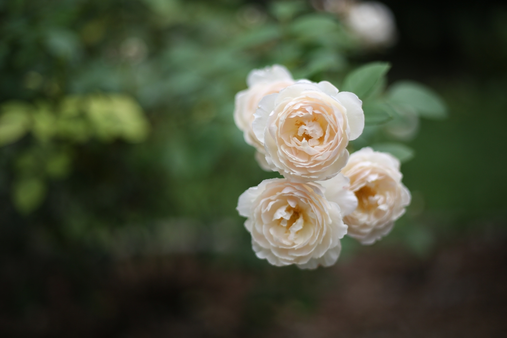
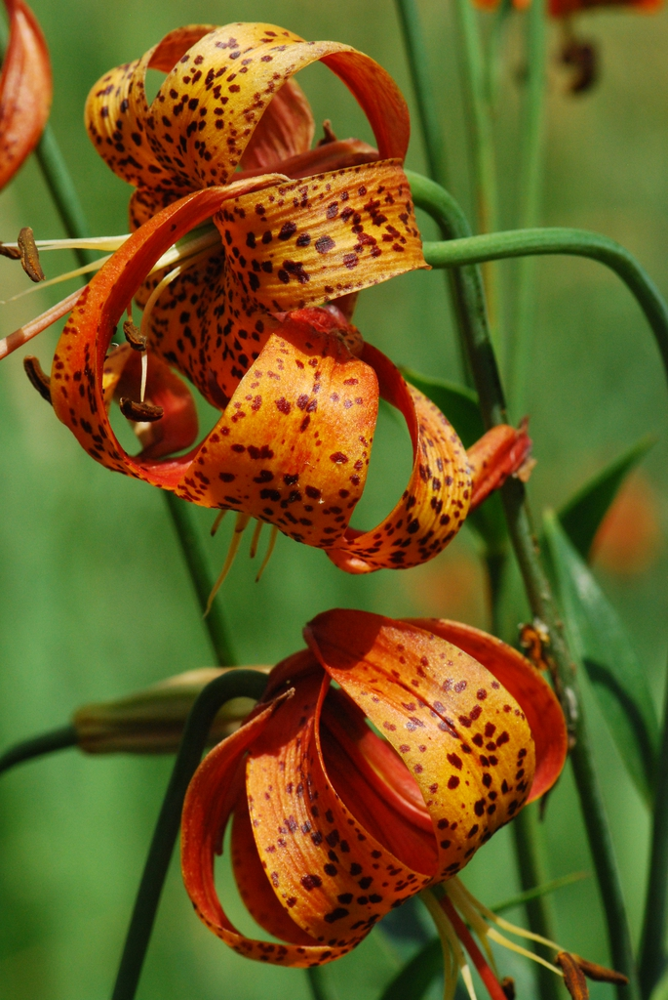

Flores que transformam momentos em lembranças.
Buquês, arranjos e presentes especiais para demonstrar carinho em qualquer ocasião.

Flores para cada ocasião.
Pequenos gestos, grandes sentimentos. Descubra o que combina com o seu momento.
Nossa coleção de flores.
Uma amostra de estilos, cores e composições para inspirar seu próximo gesto.
Nossos favoritos.
Os detalhes que tornam cada gesto ainda mais especial.

Mais do que flores, entregamos sentimentos.
Acreditamos que há histórias que são melhor contadas com flores. Um abraço à distância, um parabéns inesperado, um simples “lembrei de você”.
Na Flora Bella, cada detalhe é pensado para transformar esses momentos em memórias bonitas. Esta é uma floricultura fictícia: este modelo mostra como uma marca real pode apresentar sua história e suas flores com personalidade.
Seu momento especial começa aqui.
Conheça nossas coleções e converse com a equipe sobre ideias, ocasiões e disponibilidade de arranjos.
No modo demonstrativo, você poderá visualizar a mensagem sem enviá-la.Fotografias reais: NC State Extension Plant Toolbox, com autoria e licen?a nos detalhes de cada flor. Fotos recortadas na exibi??o. A sele??o apresenta esp?cies e g?neros; cores e variedades podem variar.